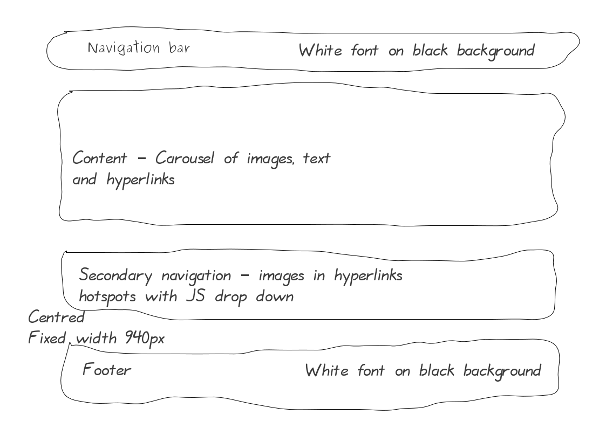
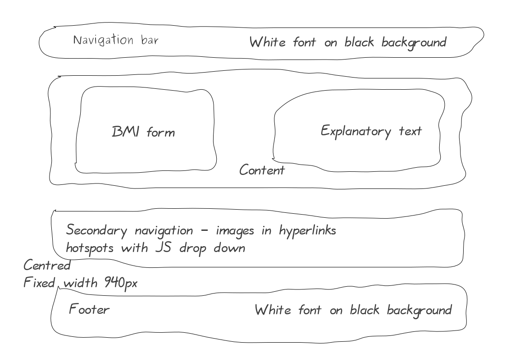

Body Mass Index (BMI) with Bootstrap
Our aim is to demonstrate the approach to build a site using Bootstrap as the framework. Use the navigation in the BMI Site to see the final site built in this exercise.
Following the Approach exercise, we will code the layout, typography, navigation and finnish with the detail of the design.
Template page
We start by building a template of the common HTML and CSS accross the site.
Layout
Here is a doodle for the BMI index pages

And a second BMI calculator page.

The page layouts have the navigation bar, secondary navigation and footer common accross pages and only the content layout changes. We can therefore create a template layout page to use for both pages.
Exercise
- Copy the following HTML code and save it as,
bmi_template.html. -
<!DOCTYPE html> <html lang="en"> <head> <meta charset="utf-8"> <title>BMI with Bootstrap </title> <link href="css/bootstrap.css" rel="stylesheet"> <link href="css/bmi.css" rel="stylesheet"> </head> <body> <!-- main-wrapper for positioning ================================================== --> <div class="container"> <!-- NAVBAR ================================================== --> <nav> <p>TODO: insert Navigation bar</p> </nav> <!-- Content ================================================== --> <div id="content-wrapper"> <p>TODO: insert content</p> </div><!-- /#content-wrapper --> <!-- Secondary navigation ================================================== --> <nav class="nav2"> <div class="row"> <h1 class="pull-right">Click an image!</h1> </div> <!-- Navigation row with three columns --> <div class="row"> <div class="span4"> <p>TODO: insert secondary navigation content</p> </div><!-- /.span4 --> <div class="span4"> <p>TODO: insert secondary navigation content</p> </div><!-- /.span4 --> <div class="span4"> <p>TODO: insert secondary navigation content</p> </div><!-- /.span4 --> </div><!-- /.row --> </nav><!-- /.nav --> <!-- FOOTER --> <footer> <p>2012 Chubkin :) · <a href="#">Privacy</a> · <a href="#">Terms</a></p> </footer> </div><!-- /#main-wrapper --> <!-- Bootstrap --> <script src="js/jquery-latest.js"></script> <script src="js/bootstrap.js"></script> </body> </html> - Open
bmi_template.htmlin Chrome. - The
<div class="container">is the the main wrapperdivfor the whole page. Bootstrap CSS class container setswidth: 940px;and centres the container by setting the left and right margins toauto. Select the<div class="container">in the developer window and see the CSS - Being a parent branch, the
containerclass ensures alignment of the page. - Next, we define
divs for the navbar and content rows and leave a TODO note. - The layout for the secondary navigation has two rows, with three columns in the second row. Bootstrap provides a grid system with 12 columns, making for a 940px wide container. Select the second
navelement in the developer window and note the use ofrowandspan4to achieve the three equal width columns (simply 4 × 3 as therowis divided into 12 columns). - Finally, the
footerelements sits nicely within the maincontainer.
In the first iteration, we have created the basic layout common to both pages. This can be validated and checked before moving onto implementing navigation.
Navigation
The site has a common navigation bar and a secondary navigation with an image hotspot and a Javascript dropdown effect.
Navigation bar
Bootstrap provides a range of navigation bars we can utilise. These are essentially unordered lists with sufficient wrapping div elements to style the navigation.
Exercise
- Edit the
bmi_template.htmlfile and replace,<p>TODO: insert Navigation bar</p>with the following code<div class="navbar-wrapper"> <div class="navbar navbar-inverse"> <div class="navbar-inner"> <ul class="nav"> <li class="active"><a class="brand" href="#">BMI</a></li> <li><a href="bmi_calculator.html">BMI Calculator</a></li> </ul> </div><!-- /.navbar-inner --> </div><!-- /.navbar --> </div><!-- /.navbar-wrapper --> - As the heart of the navigation is an unordered list of hyperlinks. The rest of the wrapping
divelements allow for CSS styles to be applied in a cumulative fashion for more maintainable code. - Open
bmi_template.htmlin Chrome. - We have used a Bootstrap component Navbar for the main navigation. This uses a set of Bootstrap CSS classes, namely,
navbar navbar-inverse navbar-inner navandactive. In the developer window, select thenavHTML code to see the CSS properties.
Secondary navigation
Use the secondary navigation in the BMI Site to see the Javascript transition when an image is clicked and consider the following code.
<a data-toggle="collapse" data-target="#dt1"><img class="img-circle" src="img/img-01.jpg"></a> <div id="dt1" class="collapse"> <h2>Health check!</h2> <p>A good indicator of general health is the BMI. It is your weight divided by your height squared.</p> <p><a class="btn" href="bmi_calculator.html">Calculate your BMI »</a></p> </div>
- Javascript dropdown transitions are essentially achieved with a trigger element, such as a hyperlink, toggling the CSS
displayproperty tononeandvisible. - Note the hyperlink has the HTML5 data attributes,
data-toggle="collapse"anddata-target="#dt1". This is unobtrusive Javascript, the hyperlink withdata-target="#dt1"is associated with the element with the sameid, in this case<div id="dt1"; hence, clicking the link toggles thedivCSS display property to be hidden or visible (Much better than obtrusive JS with additional DHTML markup such asonclick).
Exercise
Being common to both page, we can add the content of the secondary navigation to the layout in bmi_template.html file.
- Edit the
bmi_template.htmlfile and replace,<!-- Secondary navigation ================================================== --> <nav class="nav2"> <div class="row"> <h1 class="pull-right">Click an image!</h1> </div> <!-- Navigation row with three columns --> <div class="row"> <div class="span4"> <p>TODO: insert secondary navigation content</p> </div><!-- /.span4 --> <div class="span4"> <p>TODO: insert secondary navigation content</p> </div><!-- /.span4 --> <div class="span4"> <p>TODO: insert secondary navigation content</p> </div><!-- /.span4 --> </div><!-- /.row --> </nav><!-- /.nav -->with the following code:<!-- Secondary navigation ================================================== --> <div class="nav2"> <div class="row"> <h1 class="pull-right">Click an image!</h1> </div> <!-- Three columns of text below the carousel --> <div class="row"> <div class="span4"> <a data-toggle="collapse" data-target="#dt1"><img class="img-circle" src="img/img-01.jpg"></a> <div id="dt1" class="collapse"> <h2>Health check!</h2> <p>A good indicator of general health is the BMI. It is your weight divided by your height squared.</p> <p><a class="btn" href="bmi_calculator.html">Calculate your BMI »</a></p> </div> </div><!-- /.span4 --> <div class="span4"> <a data-toggle="collapse" data-target="#dt2"><img class="img-circle" src="img/img-02.jpg"></a> <div id="dt2" class="collapse"> <h2>BMI facts</h2> <p>What is the body mass index (BMI)? How is it categorised? and which age groups does it apply to?</p> <p><a class="btn" target="_blank" href="http://en.wikipedia.org/wiki/Body_mass_index"> Read all abou it! »</a></p> </div> </div><!-- /.span4 --> <div class="span4"> <a data-toggle="collapse" data-target="#dt3"><img class="img-circle" src="img/img-03.jpg"></a> <div id="dt3" class="collapse"> <h2>Healthy eating</h2> <p>Food, material consisting of protein, carbohydrate, and fat used to sustain growth.</p> <p><a class="btn" target="_blank" href="http://www.nhs.uk/LiveWell/healthy-eating/Pages/Healthyeating.aspx"> Healthy eating »</a></p> </div> </div><!-- /.span4 --> </div><!-- /.row --> </div><!-- /.nav2 --> - In Aptana, right-mouse click and select Source > format
- Open
bmi_template.htmlin Chrome and click an image to see the JS transition. - Note we have used the Bootstrap helper class pull-right to float the heading to the right of the row. Similarly, the hyperlinks in the drop down panels have been styled with the Bootstrap btn CSS class.
Completing the template
In this third iteration, we apply the common CSS to complete the template. There is little to do here, centring of text for the secondary navigation and styling the footer.
Exercise
The bmi_template.html file already has a link to the css/bmi.css file.
- Create the
bmi.cssfile in thecssdirectory and insert the following code into it./* GLOBAL STYLES -------------------------------------------------- */ /* Main content -------------------------------------------------- */ #content-wrapper { min-height: 250px; } /* Secondary navigation -------------------------------------------------- */ /* Center align the text within the three columns */ .nav2 .span4 { text-align: center; } .nav2 .span4 p { margin-left: 10px; margin-right: 10px; } .nav2 h2 { font-weight: normal; } /* Footer -------------------------------------------------- */ footer { margin-top: 30px; padding: 120px 50px 20px 50px; background-color: #000000; color: #ffffff; border-radius: 4px; } - Open
bmi_template.htmlin Chrome to see the common template we can reuse to create other pages in the site. - Note we have have applied a
min-heightto the content div to see the page porportionality. In subsequant exercises we will replace this with the content for the particular page.
BMI index page
Our aim is to reuse the template file we created above and insert the content for the index page. See the BMI Site; we have to include a carousel in the main content division.
Essentially a carousel is a series of div with the class item. The div can contain any HTML element including text, images, sound or video. As with all unobtrusive Javascript element ids are often used to trigger an event, in this example it is in the following line of code:
<a class="left carousel-control" href="#myCarousel" data-slide="prev">‹</a>Note the
href="#myCarousel", the same id as the div containing the carousel item divs. The data needed for the Javascript to complete the transition is passed using HTML5 data attributes, such as data-slide="prev".
Exercise
- Copy the
bmi_template.htmlfile and save it asbmi_index.html. - Edit the
bmi_index.htmlfile and in the main content division, replace,<p>TODO: insert content</p>with the following code:<!-- Carousel ================================================== --> <div id="myCarousel" class="container carousel"> <div class="carousel-inner"> <div class="item active"> <img src="img/img-01.jpg" alt=""> <div class="well carousel-caption"> <h1>Health check!</h1> <p class="lead">A rough guide to health is the BMI.</p> <p><a class="btn btn-large btn-primary" href="view_bmi_form.html"> Calculate your BMI »</a></p> </div> </div> <div class="item"> <img src="img/img-02.jpg" alt=""> <div class="well carousel-caption"> <h1>BMI facts</h1> <p class="lead">What is the body mass index (BMI)? How is it categorised?.</p> <a class="btn btn-large btn-primary" target="_blank" href="http://en.wikipedia.org/wiki/Body_mass_index">Read all about it »</a> </div> </div> <div class="item"> <img src="img/img-03.jpg" alt=""> <div class="carousel-caption"> <h1>Healthy eating</h1> <p class="lead">Food, material consisting essentially of protein, carbohydrate, and fat used in the body of an organism to sustain growth, repair, and vital processes and to furnish energy.</p> <a class="btn btn-large btn-primary" href="http://www.nhs.uk/livewell/healthy-eating/pages/healthyeating.aspx"> Healthy eating »</a> </div> </div> </div> <a class="left carousel-control" href="#myCarousel" data-slide="prev">‹</a> <a class="right carousel-control" href="#myCarousel" data-slide="next">›</a> </div><!-- /.carousel --> - Right-mouse click and select Source > format
- Note the hyperlinks (toward the end of the code) used to trigger the carousel have
href="#myCarousel", the same id as thedivcontaining the carousel item divs. - The data needed for the Javascript to complete the transition is passed using HTML5 data attributes, such as
data-slide - View the
bmi_index.htmlfile in Chrome and click through the images on the Carousel.
And for a little style to the caption and the carousel control arrows:
- Insert the following into
bmi.cssfile./* CUSTOMIZE THE CAROUSEL -------------------------------------------------- */ .carousel-control { background-color: transparent; border: 0; font-size: 120px; margin-top: 0; } .carousel-caption { max-width: 550px; padding: 20px; margin: 0 0 30px 70px; color: #fff; background-color: #000000; border-color:#000000; opacity: 0.55; } .carousel-caption h1, .carousel-caption .lead { margin: 0; line-height: 1.25; text-shadow: 0 1px 1px rgba(0,0,0,.4); } .carousel-caption .btn { margin-top: 10px; } - View the
bmi_index.htmlfile in Chrome and inspect the CSS code in the developer window.
BMI claculator page
Our aim is to reuse the template file we created above and insert the content for the BMI calculator page. See the BMI Site; we have to include a form in the first column and some explanatory text in the second column of the main content row. All straight forward HTML and CSS.
Exercise
- Copy the
bmi_template.htmlfile and save it asbmi_calculator.html. - Edit the
bmi_calculator.htmlfile and in the main content division, replace,<p>TODO: insert content</p>with the following code:<!-- Row with 2 span6 columns --> <div class="row"> <div class="span6"><!-- first column --> <!-- bmi Form --> <div class="well bmi-form"> <h2>BMI Calculator</h2> <form class="form-horizontal" method="get" action="#"> <div class="control-group"> <label class="control-label" for="weight">Weight</label> <div class="controls"> <input type="text" id="weight" placeholder="Weight in Kilograms"> </div> </div> <div class="control-group"> <label class="control-label" for="height">Height</label> <div class="controls"> <input type="text" id="height" placeholder="Height in Meters"> </div> </div> <div class="control-group"> <div class="controls"> <button type="submit" class="btn">Calculate BMI</button> </div> </div> </form> </div><!-- /.bmi_form --> </div><!-- /.first column --> <div class="span6"><!-- second column --> <p class="alert alert-info">The Body Mass Index(BMI) is a good way to check if you are a healthy weight. Use our BMI calculator to check you are a healthy weight for your height.</p> <p class="alert alert-danger">For adults, a BMI of less than 15 is considered very severly underweight and a BMI of over 40 very severly obese.</p> <p class="alert alert-success">A normal healthy weight has a BMI of 18.5 to 25.</p> </div><!-- /.second column --> </div> - Right-mouse click and select Source > format
- View the
bmi_calculator.htmlfile in Chrome and inspect the CSS code in the developer window.